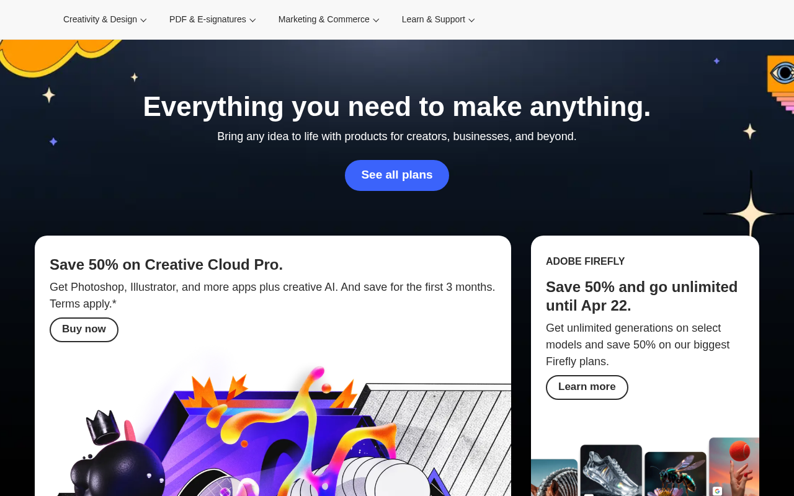

Design System Report
Adobe — --feds-* / Spectrum
adobe.com 이 실제 서빙하는 CSS에서 추출한 디자인 토큰. 로고 레드(#EB1000)와 UI CTA 블루(#3B63FB)는 완전히 다른 역할을 한다.

Quick Start
5분 안에 Adobe처럼 만들기 — 3가지만 하면 80%
1 · 폰트 + weight
body {
font-family: "adobe-clean",
"Helvetica Neue", Arial, sans-serif;
font-weight: 400;
}
2 · 배경 + 텍스트
:root {
--bg: #FFFFFF;
--fg: #292929;
}
body {
background: var(--bg);
color: var(--fg);
}
3 · 브랜드 CTA 블루
:root {
/* CTA 버튼 */
--brand: #3B63FB;
/* ⚠️ 로고 레드는 별도 */
--logo: #EB1000;
}
절대 하지 말아야 할 것 하나: Adobe 로고의 빨간
#EB1000을 UI 버튼 색으로 쓰는 것. 실제 CTA 버튼은 Spectrum 파란색 #3B63FB이다. 빨간색은 로고 전용.
Source
adobe.com
FEDS + Spectrum 레이어
Fetched
2026.04.13
CSS custom properties 파싱
System
--feds-*
Adobe Spectrum FEDS 레이어
CTA Brand
#3B63FB
Spectrum Blue 2 (UI 전용)
01 · Provenance
출처와 수집 기준
URL · fetch 시점 · 파싱 방식까지 모두 CSS 번들에서 직접 뽑은 값이다.
Source URL
https://adobe.comFetched2026-04-13
Extractorcurl + Chrome UA (5-tier fallback)
CSS files다수 외부 CSS (Adobe FEDS + Spectrum)
Token prefix
--feds-*, --alias-*MethodCSS 커스텀 프로퍼티 직접 파싱 · AI 추론 없음
02 · Tech Stack
테크 스택
Adobe 마케팅 사이트의 CSS 아키텍처와 디자인 시스템 구조.
Framework
Adobe 자체 마케팅 플랫폼 (Helix/Franklin 기반)
Design System
Adobe Spectrum + FEDS (Frontend DS) 레이어
Prefix:
Prefix:
--feds-*, --alias-*CSS Architecture
2-tier:
--alias-background-semantic-* (역할 토큰) → --feds-cta-* (마케팅 CTA)Font Loading
자체 호스트 (adobe-clean, adobe-clean-serif, adobe-clean-display)
Default theme: light
Default theme: light
03 · 타이포그래피
로고체와 UI 폰트가 다르다 — adobe-clean 패밀리
adobe-clean, adobe-clean-serif, adobe-clean-display 세 가지 변형. 외부에서는 Source Sans 3 / Inter로 대체.
Display
adobe-clean-display — Adobe 독점, 대형 헤드라인 전용
Body
adobe-clean — Adobe 독점, 본문 기본
Serif
adobe-clean-serif — Adobe 독점, 에디토리얼
Weight
normal: 400 / bold: 700 (heading 21회, body 13회)
Fallback
"Helvetica Neue", Arial, sans-serif — 외부 대체: Source Sans 304 · 컬러
로고 레드와 UI 블루는 완전히 다른 역할
--feds-color-adobeBrand(#EB1000)는 로고 전용. CTA 버튼은 Spectrum Blue 2(#3B63FB). 혼용하면 안 된다.
Spectrum Blue CTA Ramp
CTA#3B63FB
hover#274DEA
spectrum#0265DC
s-hover#0054B6
focus#507BFF
express#5258E4
Adobe Brand + Neutral
로고 레드#EB1000
텍스트#292929
CTA border#DADADA
hover bg#F5F5F5
CTA Primary
--feds-cta-primary-bg
메인 CTA 버튼 배경
Adobe Brand (로고 전용)
--feds-color-adobeBrand
로고 · 브랜드 아이덴티티 전용
기본 텍스트
--alias-icon-neutral-default
본문 · 아이콘 기본 색
포커스 링
--alias-icon-neutral-key-focus
키보드 포커스 표시
05 · 컴포넌트
FEDS CTA 버튼 — Primary / Secondary
Adobe 마케팅 사이트의 주요 CTA 패턴. Primary는 Spectrum Blue, Secondary는 투명 배경.
.feds-cta--primary
Primary CTA 버튼
<a href="#" class="feds-cta--primary"> 무료로 시작하기 </a>
background: #3B63FBcolor: #FFFFFFfont-weight: 700hover: #274DEAborder-radius: 4px
.feds-cta--secondary
Secondary CTA 버튼
<a href="#" class="feds-cta--secondary"> 자세히 알아보기 </a>
background: transparentcolor: #292929border: 1px solid #DADADAfont-weight: 400
06 · 라이팅 원칙
크리에이터 중심, 능동적 동사
Adobe 카피는 제품 능력보다 사용자의 창작 행위를 강조한다.
Headline
제품 능력 중심, 능동형 동사, 간결하게
"Make it. Make it real."
Primary CTA
행동 + 무료 강조
"무료로 시작하기"
Tone
창의적이고 역동적, 전문성 강조, 과장 없이 능력 서술
"크리에이터를 위한 모든 것 — Photoshop, Illustrator, Premiere"
07 · CSS · Tailwind
Drop-in CSS 스니펫
핵심 토큰만 추출한 즉시 사용 가능한 CSS. Tailwind 설정도 포함.
/* Adobe — copy into your root stylesheet */
:root {
/* Fonts */
--feds-font-family: "adobe-clean", "Helvetica Neue", Arial, sans-serif;
--feds-font-weight-normal: 400;
--feds-font-weight-bold: 700;
/* Brand (Spectrum Blue CTA) */
--feds-color-brand-logo: #EB1000; /* 로고 전용 — UI에 쓰지 말 것 */
--feds-color-brand-cta: #3B63FB; /* CTA 버튼 */
--feds-color-brand-cta-hover: #274DEA;
--feds-color-brand-express: #5258E4;
/* Surfaces */
--feds-bg-page: #FFFFFF;
--feds-bg-dark: #292929;
--feds-text: #292929;
--feds-text-muted: #6E6E6E;
/* Focus */
--feds-focus-ring: #507BFF;
}// tailwind.config.js — Adobe
module.exports = {
theme: {
extend: {
colors: {
brand: {
logo: '#EB1000',
cta: '#3B63FB',
hover: '#274DEA',
express: '#5258E4',
focus: '#507BFF',
},
neutral: {
900: '#292929',
300: '#DADADA',
200: '#E1E1E1',
100: '#F5F5F5',
},
},
fontFamily: {
sans: ['"adobe-clean"', '"Helvetica Neue"', 'Arial', 'sans-serif'],
},
fontWeight: {
normal: '400',
bold: '700',
},
},
},
};08 · Do / Don't
자주 틀리는 것들
Adobe 디자인을 구현할 때 실제로 가장 많이 틀리는 패턴.
✓ DO
- CTA 버튼 배경에
#3B63FB(Spectrum Blue) 사용 - 본문 색상으로
#292929(거의 검정, 순흑 아님) 사용 - Heading에
font-weight: 700적용 - 포커스 링 색으로
#507BFF사용 - adobe-clean 대체재로 Source Sans 3 또는 Inter 사용
✗ DON'T
- Adobe 로고 빨간
#EB1000을 UI 버튼에 쓰지 말 것 — 로고 전용 - body에
font-weight: 300또는100쓰지 말 것 — 400이 기준 - Spectrum Blue와 Express Purple을 같은 화면에 혼합하지 말 것
- CTA 호버 색을 임의로 만들지 말 것 —
#274DEA고정